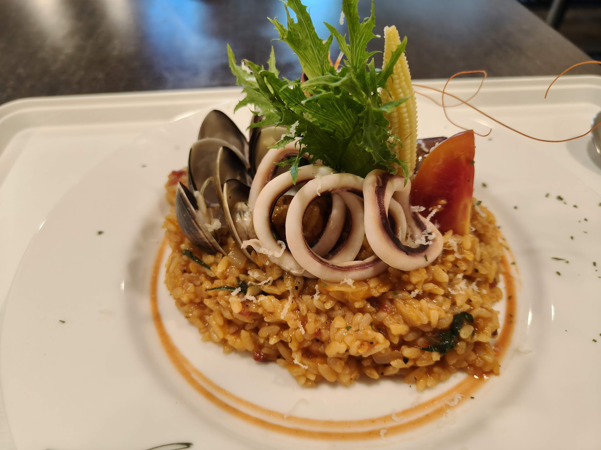

剛收到中正大學錄取通知，不確定宿舍怎麼選、怎麼從外縣市抵達民雄？ 這裡整理了新生報到、交通方式與校外租屋等最常需要的資訊， 幫助準大學生提早掌握中正大學的校園生活。
報到流程、宿舍申請、選課說明、開學準備⋯⋯ 第一次來到中正大學，從這裡開始準備。
嘉義火車站、民雄火車站或高鐵嘉義站前往中正大學的路線整理， 搭公車、騎機車、叫計程車各方式一覽。

中正大學大吃街、小吃街等學生宵夜、聚餐首選、健康餐、素食者、早午餐店、平價省錢餐廳推薦， 帶你探索中正大學的美食地圖